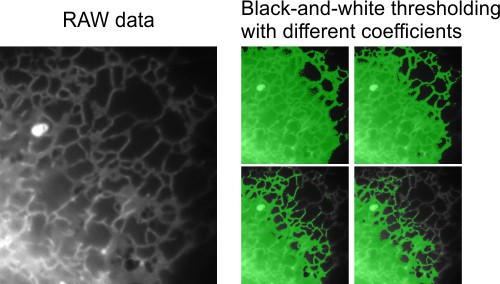
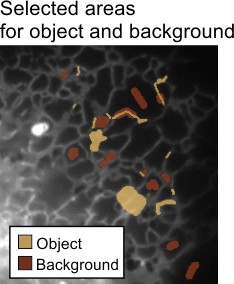
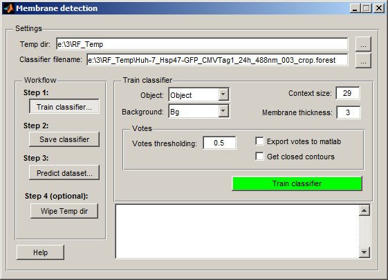
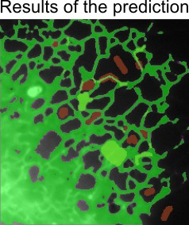
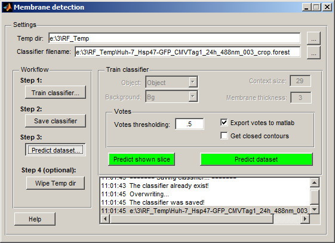

Random Forest Classifier
Random Forest Classifier is a method for automatic segmentation of images using train and predict scheme.
The current version of the classifier is based on Random Forest for Membrane Detection by Verena Kaynig and utilize randomforest-matlab by Abhishek Jaiantilal.
The example of use is presented below.
Back to Index --> User Guide --> Menu --> Tools
Contents
Dataset and the aim of the segmentation
Here is a dataset (movie) of endoplasmic reticulum taken with wide field light microscopy. The aim is to segment endoplasmic reticulum from the background in the flat areas of the cell. The global black-and-white thresholding will not work in this case due to gradient of the background intensities.

The random forest classifier may be one of the approaches to segment such dataset.
Training the classifier
The first part of the classification is to select areas that belong to the object of interest and background.
- Start a new model: Segmentation Panel->the Create button
- Add two materials for the model: Segmentation Panel->the + button
- Rename material 1 to Object and material 2 to Background. Highlight material in the left list box, press the right mouse button and select Rename in the popup menu

- Select the Brush tool and select some profiles of the endoplasmic reticulum and assign them to the Object material of the model (select '1' in the 'Add to' list and press the 'A' shortcut)
- Select few areas of the background and add those to the Background material of the model (select '2' in the 'Add to' list and press the 'A' shortcut)

- Start Random Forest Classifier: Menu->Tools->Classifier->Membrane detection

By default classifier creates a new directory (RF_Temp) next to the data location that will be used to store images processed for classification and classifier itself. The temporary directory name and the classifier name can be changed in the Temp dir and Classifier filename edit boxes.
- Select Object in the Object popup menu
- Select Background in the Background popup menu
- Check the Context size. In general the short or too much bended membrane profiles require smaller context size.
- Check Membrane thickness. Put here approximate thickness (in pixels) of the membrane profile.
- Check parameters of the Votes section. This section allows to define threshold value for the votes, export votes to matlab and force to get only closed membrane profiles
- Press the Train Classifier button to process the image and train classifier based on the already segmented areas. The classifier will predict the currently shown slice. If results are not good enough, segment more areas. The areas may be segmented on different slices and during the training will be assembled together.

- When the results of the training is good enough go to the second step in the workflow and press the Save classifier button.
Prediction of the whole dataset
When training is done and classificator was saved to a disk go to the 3rd step of the workflow: Predict dataset...

This dialog is allowing to start prediction either for any currently shown slice or for the whole dataset at once. So one can test results of the prediction on any random slice and if the results are acceptable press the Predict dataset button.
When the prediction is finished the results are assigned to the Selection layer. From the Selection layer the results should be transferred to the Model and Mask layer for further polishing and saving to disk.
Wiping the temp directory
During the prediction the classifier creates quite many large size files in the RF_Temp directory. This directory can be deleted by pressing the Wipe Temp dir button or manually using any file explorer.
Back to Index --> User Guide --> Menu --> Tools